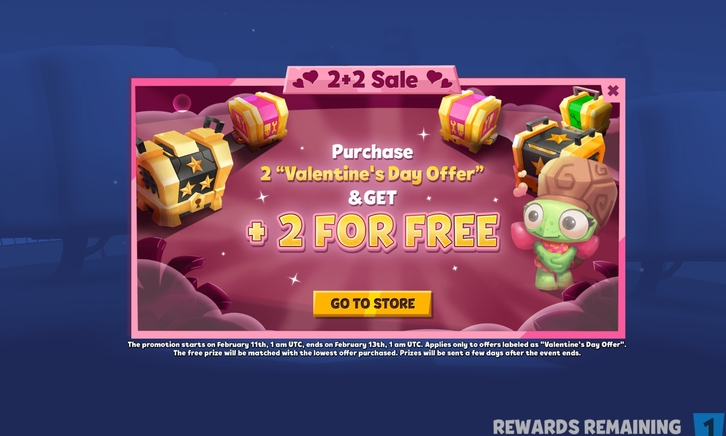
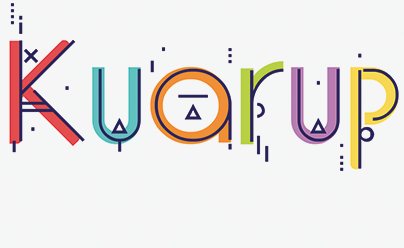
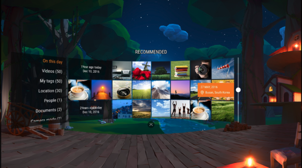
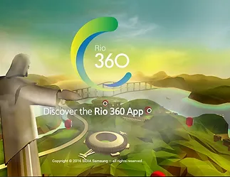
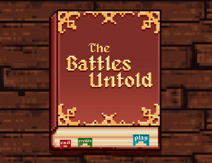
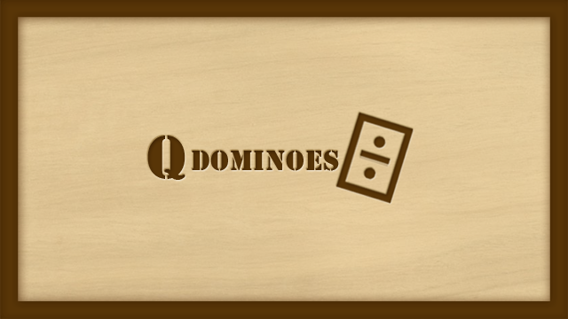
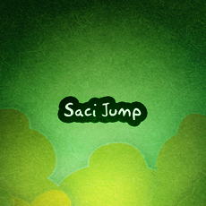

My Portfolio
LiveOps Project: Popup Tool (2022)
A LiveOps/Monetization tool project to show dinamically popups in Wildlife Studios games. Whenever a product manager wanted to deploy a new offer in game, it would only update remotely the popup html.
My role: I implemented an Unity3D SDK that allowed games to show dynamic popups. This SDK was incorporated in games such as Zooba, War Machines, Sniper3D
Platforms: Android, iOS
Tags: #tools #unity3d #unityplugins
Kuarup (2017)
URL: https://play.google.com/store/apps/details?id=com.pxlsquadgames.kuarup
An Unity3D mobile match-3-like puzzle Game for GGJ16.
My role: Worked in main gameplay features, UI, PCG algorithms and dotween-based animations. See more
Platforms: Android
Tags: #unity3d #match-3 #puzzle
VR Gallery (2017)
URL: https://www.oculus.com/experiences/gear-vr/1113617725394318/
A GearVR application to view images and watch video. It supports 2D and 3D video, 3D spacial sound, subtitles, and photo galleries.
My role: I worked in different tasks like UI, shaders, performance analysis and debugging
Platforms: Samsung GearVR, Android
Tags: #unity3d #virtualreality #gearvr
Rio360 (2016)
URL: https://www.oculus.com/experiences/gear-vr/1105507662843899/
A GearVR application to watch 360 videos and navigate through a low-poly depiction of Rio de Janeiro's landmarks.
My role: Worked with gaze implementation, algorithms to allow a smooth user locomotion, editor tools and shader programming.
Platforms: Samsung GearVR, Android
Tags: #unity3d #virtualreality #gearvr
The Battles Untold (2015)
URL: https://matchola.itch.io/battlesuntold
A local multiplayer brawler in which the main characters are from famous public domain work, as Dracula and Merlin for instance
My role: I worked on AI implementation: bots movement and general behaviors and strategies.
Platforms: macOS, Windows
Tags: #game_ai #unity3d #2dgame
Woody Endless Summer (2014)
A time-based sidescroller infinite runner implemented in Unity3D targetting mobile platforms.
My role: My contributions to this project were developping a chunk-based procedural generation algorithm, difficulty-level curves, few gameplay mechanics, UI implementation and performance improvements.
Platforms: Android, iOS, WindowsPhone
Tags: #pcg #unity3d #2dgame #infinity_runner
Soccer Button (2013)
URL: https://play.google.com/store/apps/details?id=br.org.sidia.futebol
A turn-based multiplayer Android game implemented in Unity 4.3.
My role: I was the tech lead of this project, so I was responsible for architecture and software components definition, implementation of state machine-based gameplay, networking components and several Android plugins for integration with Samsung APIs (multiplayer, Ads, in-app, ...)
Platforms: Android
Tags: #multiplayer #unity3d #3dgame
QDominoes (2012)
A Dominoes game for Symbian/Meego platforms using Qt
My role: I worked with main gameplay features, UI, debugging, and implemented some AI bots
Platforms: Symbian
Tags: #Qt
Cyber Eddy (2012)
A cocos2d asteroid-like game
My role: I worked with gameplay features, UI and debugging
Platforms: Symbian
Tags: #Qt
Saci Jump (2012)
A Qt DoodleJump-like game that features Saci, a famous character from brazilian folklore
My role: I worked with gameplay features, UI and debugging
Platforms: Symbian
Tags: #Qt
Eddy (2011)
An educational puzzle Qt game that addressed the importance of selective waste collection.
My role: I worked with box2d implementations for Qt
Platforms: Symbian
Tags: #Qt